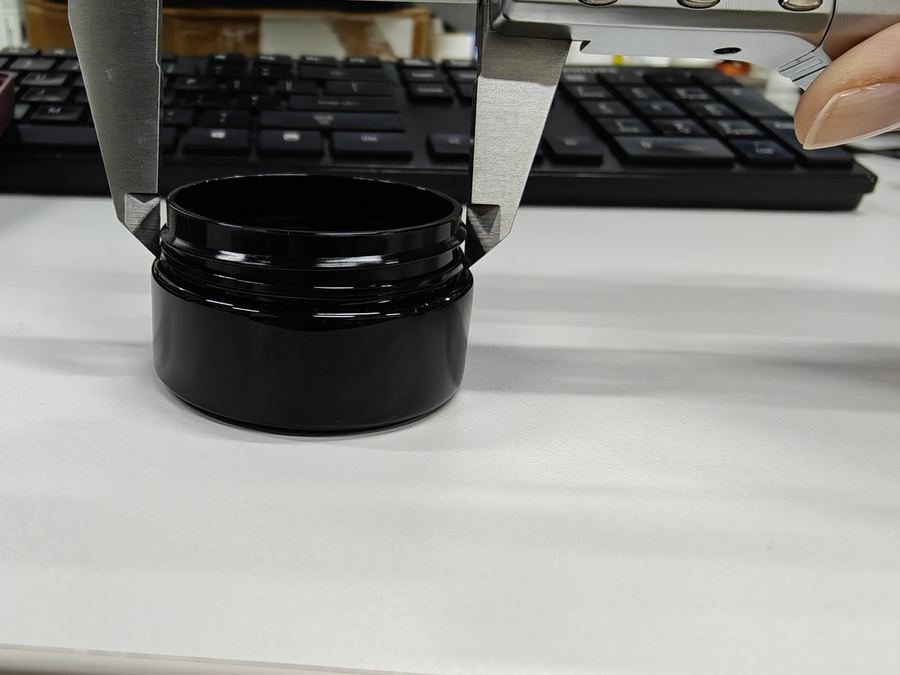

Tooling Lead Time: Where the 30–40 Days Actually Go
 By Joe Joo · 8PCK · Shantou · Updated 26 October 2026
By Joe Joo · 8PCK · Shantou · Updated 26 October 2026
A new bottle mould is quoted at 30–40 days. Buyers hear one number; the factory sees six separate waits. Here is the breakdown, and the three places a project slips.
Thirty to forty days is the honest answer for a single-cavity blow mould — but it is an average, not a promise. The same project can run in 25 days or 60, and the difference is almost never the machining.
What follows is the sequence we actually run in Haojiang, with the days attached to each stage and the points where the calendar moves without anyone deciding it should.
The free Bottle Spec Checker tests whether your neck fits the closure and whether the wall survives a pump stroke.
30-second check: does your bottle pass? Open ▾
The Six Waits, in Order
DFM review comes first and is the cheapest place to lose a week. Somebody has to check the wall, the draft, the gate position, the seal land and the thread against the drawing before steel is ordered. Three to five days, and if the drawing is incomplete it stops there — which is why a brief with no thickness or no closure choice adds days before anything is cut.
Tool design is the second wait: parting line, ejection, cooling, cavity count, tolerance stack. Five to seven days, and it cannot overlap with machining because the machining follows the design.
Steel and machining is the long block — fifteen to twenty-five days for one cavity, longer for a hardened tool or a mirror finish. This is the part everyone counts, and it is also the part that runs fastest when the design is settled.
T0 first shots are a day or two in-house: the tool is fitted and run to see whether it closes, fills and ejects.
T1 samples then travel to you, seven to ten days by courier, and you need a few days to fill, cap, drop and measure them. This is the stage buyers underestimate most: the factory is not waiting, you are.
Modification follows the trial, five to seven days if the change is a gate, a wall or a thread relief; longer if it touches the parting line.
Where Projects Actually Slip
Three things move the date, and none of them is the machine shop. The first is an incomplete brief: no target weight, no closure, no decoration decision. Each missing field becomes a question, and each question is a day.
The second is the sample round trip. The tool is ready when T1 arrives, but approval waits for your fill trial, your marketing sign-off and sometimes your customer's customer. We have seen four weeks disappear there without a single change to the mould.
The third is steel availability and finish. A clear part needing a mirror polish adds hand work that cannot be scheduled like machining; a hardened tool needs heat treatment between cutting passes.
What We Do to Compress It
Send the DFM note with the quotation rather than after it — the buyer sees the risks before committing, and the design debate happens while nobody is waiting for steel.
Run T0 photographs the same day the tool closes, so you can see the part before the courier leaves. If the first shots already show a problem, we fix it before T1 ships rather than after.
Quote the modification round inside the tooling price for the first change, because almost every project needs one. That keeps the second round from becoming a negotiation while the calendar runs.
What the Timeline Does Not Include
Chinese New Year: two to four weeks in January or February when the shop empties. A tool started in December lands in March, not January.
National holidays in May and October, each a working week lost.
Your own approval time, which is usually the largest single block in the whole project.
A Realistic Calendar for a Four-Part Pack
Four parts means four tools, four trials and four tolerance stacks, run in parallel where the shop allows. In practice: DFM and design two weeks, machining four to five weeks, T0 and T1 five weeks including courier, modification one week, production five weeks. Twelve to fourteen weeks from drawing to shipped goods, of which the tooling itself is six to eight.
Anyone quoting four weeks for a four-part assembly is quoting the machining only. Ask what the number includes.
Questions We Get on This
How long does a new bottle mould take?
A single-cavity blow mould is 30–40 days from drawing to T1 samples, with machining the longest single block at 15–25 days.
Why do some moulds take 60 days?
Usually an incomplete brief, a sample round trip, or a mirror polish and hardened steel. Chinese New Year adds two to four weeks if the tool starts in December.
Does a second cavity double the lead time?
No. Two cavities add machining days, not double the schedule, because design and trial are shared. It typically adds 20–30 % to the tooling time, not 100 %.
Sizes That Fit This Guide
Get a Price on This, Within One Business Day
Tell us the capacity, the neck and the quantity. You get unit price, lead time and a sample plan — not a catalogue.

Every batch is gauged at the neck and weighed. The documents travel with the shipment.